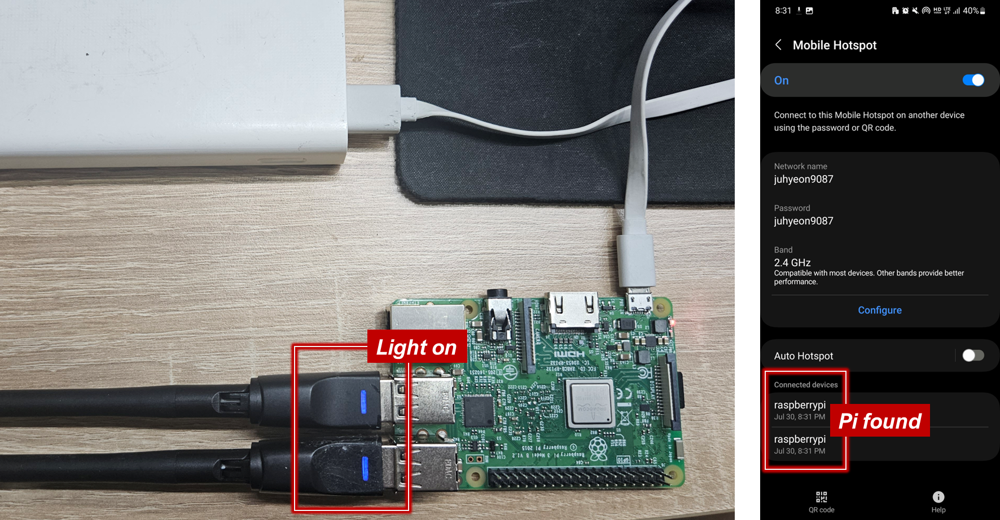
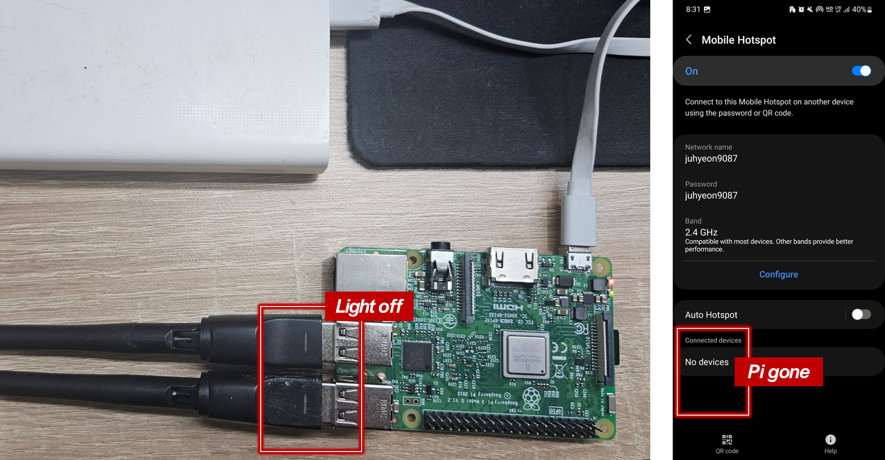

3 Deployment
This chapter covers testing and deploying the WiFi sensing service. You will first test in a controlled environment, then enable the service to run at boot, and finally test in the field without Ethernet.
3.1 Test in Controlled Environment
Run the Script
Power off the Pi, insert the external WiFi adapter, and power it back on.

Connect via SSH and verify the network interfaces:
ifconfigThe internal WiFi should be wlan0 with a MAC address starting with b8:27:eb. External adapters appear as wlan1, wlan2, etc.

Enter superuser mode and run the sensing script:
sudo su
python3 urban-sensing-raspi/code/start.pyLet it run for about 2 minutes, then stop with Ctrl+C.
-i: Retain raw WiFi packets-b: Enable Bluetooth sensing
See the GitHub repository for all options.
Verify the Results
Access the Pi’s shared folder by typing \\raspberrypi\share in File Explorer.
In the stats folder, verify that file names reflect the execution time and that files have been uploaded to Dropbox.
In the data folder, check for the WiFi packet file. If you used -b, a Bluetooth file should also appear. Use DB Browser for SQLite to inspect the data.
3.2 Enable the Service
Once testing is complete, configure the Pi to start sensing automatically at boot:
bash urban-sensing-raspi/service.shFollow the prompts and verify the service is running. Press Ctrl+C to exit the status display.
The script has a 30-second delay at startup. To pause sensing for file transfers or maintenance, stop the service within this window:
sudo systemctl stop sensing.service3.3 Test in the Field
This section tests the service without Ethernet, simulating real-world deployment. The WiFi adapter transitions through two modes: station mode for network connection, then monitor mode for packet capture.
Prepare the Hardware
Turn on your mobile hotspot and connect an external battery to power the Pi.


Station Mode
When the Pi boots, it first enters station mode to connect to your hotspot. In this mode:
- The WiFi adapter’s indicator light turns on
- The Pi appears on your hotspot’s connected devices list
- Status files begin uploading to Dropbox

Once connected, verify that status files appear in your Dropbox.

The raspberrypi network may remain visible briefly. The script disconnects wlan0 after approximately 3 minutes.
Monitor Mode
After the initial connection, the adapter switches to monitor mode for passive packet capture. In this mode:
- The WiFi adapter’s indicator light turns off
- The Pi disappears from your hotspot’s connected devices list
- Packet capture begins

To end sensing, unplug the battery. Review the results using Ethernet or your mobile hotspot, as in the controlled environment test.